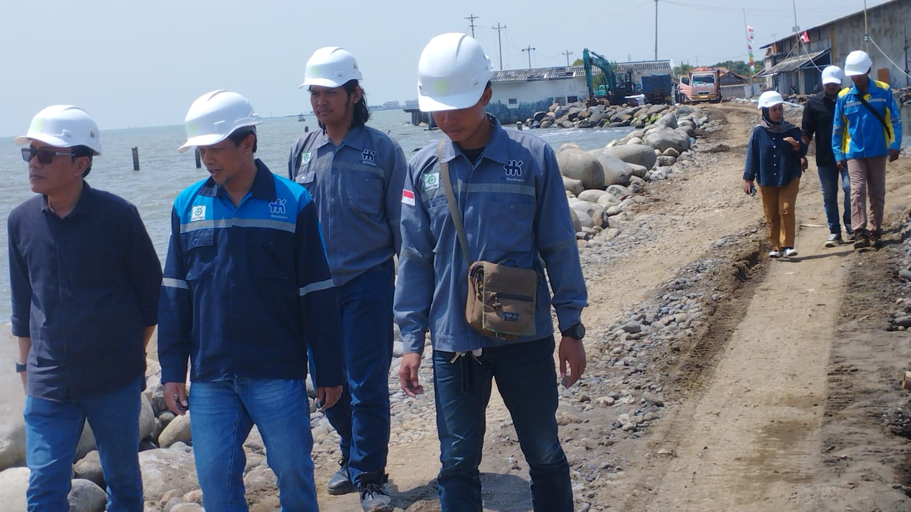
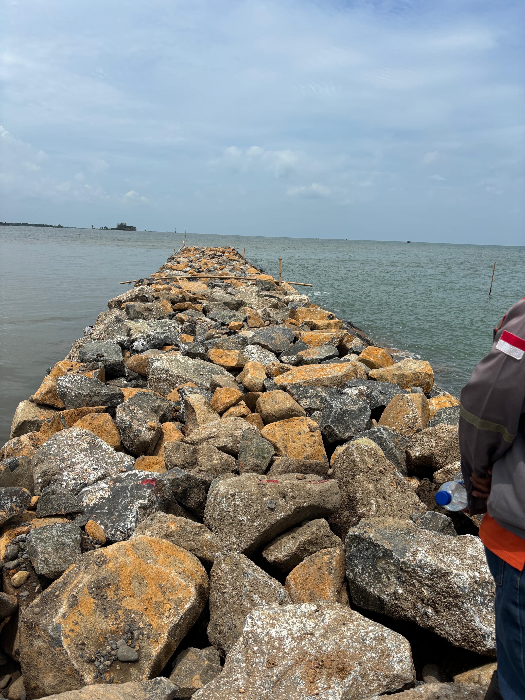

Selama 6 bulan berkontribusi pada CV.Rahma Konsultan, saya bertanggung jawab penuh sebagai Pengawas Lapangan dalam proyek. Proyek Renovasi Gedung FTEIC kampus ITS Surabaya saya berfokus pada pengendalian teknis, manajemen biaya, dan pelaporan progres guna memastikan integritas struktur dan efisiensi operasional. Berikut adalah rincian tanggung jawab dan pencapaian saya:

Project Pengawasan Dan Perencanaan Bangunan Pengaman Pantai Breakwater Rubbel Mound
Dalam Perecanaan dan Pengawasan Lapangan dalam proyek strategis pembangunan infrastruktur pengaman pantai (Breakwater Rubbelmound) di Pekalongan. Adapun juga Jobdesk sebelum pelaksanaan penyiapan dokumen seperti metode pelaksanaan, rencana kerja dan syarat syarat (RKS), Time schedule dan dokumen K3 antara lain Sistem Manajemen keselamatan Kesehatan Kerja (SMK3), Rencana Kesehatan Kerja (RKK, Job safety Analysis (JSA).
Pada waktu pelaksanaan pengawasan lapangan memiliki tanggung jawab sebagia berikut:
